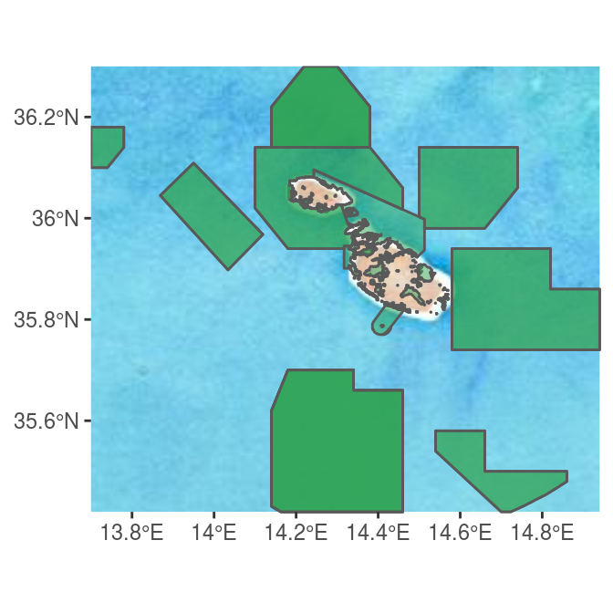

Here we will provide a short introduction to the wdpar R package.
First, we will load the wdpar R package. We will also load the sf and dplyr R packages to help explore protected area data.
# load packages
library(wdpar)
library(sf)
library(dplyr)Now we will download protected area data for Malta. Note that we could have alternatively downloaded the data using Malta’s ISO3 code (MLT).
# download protected area data for Malta
mlt_raw_pa_data <- wdpa_fetch("Malta")Next, we will clean the data set. Note that we will only use a single thread for data processing, but you could use the threads argument to use multiple threads for data processing. See the help page for wdpa_clean for a detailed description on the data cleaning process.
# clean Malta data
mlt_pa_data <- wdpa_clean(mlt_raw_pa_data)## [1] 1
## Time difference of 0.2532666 secs
## [1] 2
## Time difference of 0.0158205 secs
## [1] 3
## Time difference of 0.04920864 secs
## [1] 4
## Time difference of 0.2213824 secs
## [1] 5
## Time difference of 0.004238129 secs
## [1] 6
## Time difference of 0.1324329 secs
## [1] 7
## Time difference of 4.458427e-05 secs
## [1] 8
## Time difference of 0.09584236 secs
## [1] 9
## Time difference of 0.07729292 secs
## [1] 10
## Time difference of 0.09027648 secs
## [1] 11
## Time difference of 0.0002012253 secs
## [1] 12
## Time difference of 0.04528618 secs
## [1] 13
## [1] 13.1
## [1] 13.2
## [1] 13.3
## Time difference of 0.2328815 secs
## [1] 14
## Time difference of 0.0008580685 secs
## [1] 15
## Time difference of 0.01593637 secs
## [1] 16
## Time difference of 0.005809069 secs
## [1] 17Now that we have finished cleaning the data, let’s calculate some statistics. We can calculate the total amount of area inside inside Malta’s protected area system (km\(^2\)). Note that this includes marine and terrestrial protected areas.
# calculate total amount of area inside protected areas (km^2)
statistic <- mlt_pa_data %>%
as.data.frame %>%
summarize(area = sum(AREA_KM2))
# print statistic
print(statistic)## area
## 1 1.290205e+16We can also calculate the percentage of land inside protected areas that are designated strictly to protect biodiversity (and also potentially geological/geomorphological features).
# fetch spatial data for Malta's land mass and calculate its area (km^2)
mlt_land_data <- land_and_eez_fetch("Malta") %>%
filter(TYPE == "LAND") %>%
summarize(area = as.numeric(st_area(.)) * 1e+6)## [1] 1
## Time difference of 0.2150977 secs
## [1] 2
## Time difference of 0.01061225 secs
## [1] 3
## Time difference of 0.04314303 secs
## [1] 4
## Time difference of 0.1713681 secs
## [1] 5
## Time difference of 0.003299236 secs
## [1] 6
## Time difference of 0.1111104 secs
## [1] 7
## Time difference of 5.173683e-05 secs
## [1] 8
## Time difference of 0.1077363 secs
## [1] 9
## Time difference of 0.05376148 secs
## [1] 10
## Time difference of 0.1853986 secs
## [1] 11
## Time difference of 0.005075216 secs
## [1] 12
## Time difference of 0.03381753 secs
## [1] 13
## [1] 13.1
## [1] 13.2
## [1] 13.3
## Time difference of 0.2816761 secs
## [1] 14
## Time difference of 0.00107646 secs
## [1] 15
## Time difference of 0.02859354 secs
## [1] 16
## Time difference of 0.006326914 secs
## [1] 17# calculate percentage of land inside protected areas (km^2)
statistic <- mlt_pa_data %>%
as.data.frame %>%
filter(MARINE == "terrestrial", IUCN_CAT == "Ia") %>%
summarize(area_protected = sum(AREA_KM2)) %>%
mutate(total_land_area = mlt_land_data[["area"]]) %>%
mutate(percentage_protected = (area_protected / total_land_area) *
100)
# print statistic
print(statistic)## area_protected total_land_area percentage_protected
## 1 250391500000 4.949877e+14 0.0505854Finally, let’s plot a map showing Malta’s protected areas and color each area according to its management category.
plot(mlt_pa_data[, "IUCN_CAT"], main = "IUCN Category", key.size = lcm("4"))